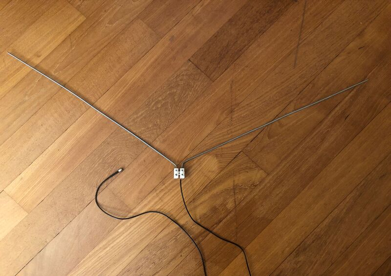
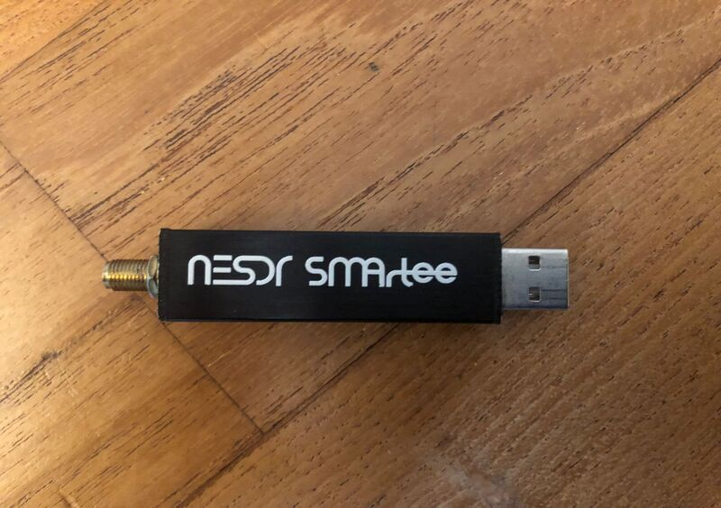

L'antenna utilizzata è un semplice dipolo a V creata con un morsetto mammut e un cavo coassiale rg174 (impedenza 50Ω) con uscita connettore SMA maschio

le barre di alluminio sono delle semplici barre filittate con un diametro di circa 2,5mm la loro lunghezza è di circa 54cm e l'angolo centrale
è di 120 gradi
SDR
L'SDR è un dispositivo che permetto di riceve e interpretare segnali radio in un determinato intervallo di frequenze.
io utilizzo quella della Nooelec NESDR SMArtee (che integra un bias tee)

Portatile
Il portatile che utilizzo è un acer swift SF113-31 abbastanza vecchio, le specifiche sono queste: